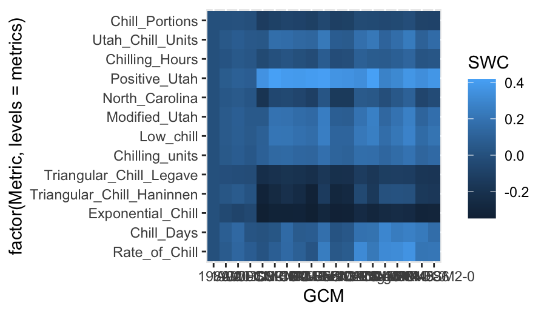
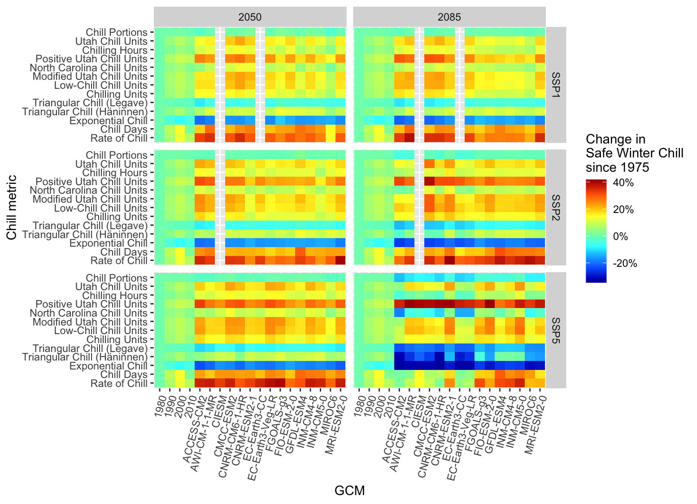

Chapter 18 Chill model comparison
18.1 Perform a similar analysis for the location you’ve chosen for your exercises.
the past and future temperature scenarios for GWANGJU 35.167 GWANGJU_Temps
SSPs <- c("ssp126", "ssp245", "ssp585")
Times <- c(2050, 2085)
hourly_models <- list(Chilling_units = chilling_units,
Low_chill = low_chill_model,
Modified_Utah = modified_utah_model,
North_Carolina = north_carolina_model,
Positive_Utah = positive_utah_model,
Chilling_Hours = Chilling_Hours,
Utah_Chill_Units = Utah_Model,
Chill_Portions = Dynamic_Model)
daily_models <- list(Rate_of_Chill = rate_of_chill,
Chill_Days = chill_days,
Exponential_Chill = exponential_chill,
Triangular_Chill_Haninnen = triangular_chill_1,
Triangular_Chill_Legave = triangular_chill_2)
metrics <- c(names(daily_models),
names(hourly_models))
model_labels = c("Rate of Chill",
"Chill Days",
"Exponential Chill",
"Triangular Chill (Häninnen)",
"Triangular Chill (Legave)",
"Chilling Units",
"Low-Chill Chill Units",
"Modified Utah Chill Units",
"North Carolina Chill Units",
"Positive Utah Chill Units",
"Chilling Hours",
"Utah Chill Units",
"Chill Portions")
data.frame(Metric=model_labels,'Function name'=metrics)
GWANGJU_temps <- read_tab("KR_data/GWANGJU_temps.csv")
GWANGJU_Temps <- load_temperature_scenarios("KR_data",
"GWANGJU_hist_scenarios")Start_JDay <- 305
End_JDay <- 59
daily_models_past_scenarios <-
tempResponse_list_daily(GWANGJU_Temps,
Start_JDay = Start_JDay,
End_JDay = End_JDay,
models=daily_models)
daily_models_past_scenarios <- lapply(
daily_models_past_scenarios,
function(x) x[which(x$Perc_complete>90),])
hourly_models_past_scenarios<-
tempResponse_daily_list(GWANGJU_Temps,
latitude = 35.167,
Start_JDay = Start_JDay,
End_JDay = End_JDay,
models = hourly_models,
misstolerance = 10)
past_scenarios <- daily_models_past_scenarios
past_scenarios <- lapply(
names(past_scenarios),
function(x)
cbind(past_scenarios[[x]],
hourly_models_past_scenarios[[x]][,names(hourly_models)]))
names(past_scenarios) <- names(daily_models_past_scenarios)
daily_models_observed <-
tempResponse_daily(GWANGJU_temps,
Start_JDay = Start_JDay,
End_JDay = End_JDay,
models = daily_models)
daily_models_observed <-
daily_models_observed[which(daily_models_observed$Perc_complete>90),]
hourly_models_observed <-
tempResponse_daily_list(GWANGJU_temps,
latitude=35.167,
Start_JDay = Start_JDay,
End_JDay = End_JDay,
models = hourly_models,
misstolerance = 10)
past_observed <- cbind(
daily_models_observed,
hourly_models_observed[[1]][,names(hourly_models)])
save_temperature_scenarios(past_scenarios,
"KR_data/GWANGJU_future_climate",
"GWANGJU_multichill_305_59_historic")
write.csv(past_observed,
"KR_data/GWANGJU_future_climate/GWANGJU_multichill_305_59_observed.csv",
row.names=FALSE)
GWANGJU_future_temps <- load_temperature_scenarios("KR_data/GWANGJU_future_climate","GWANGJU_future_")
SSPs <- c("ssp126", "ssp245", "ssp585")
Times <- c(2050, 2085)
list_ssp <-
strsplit(names(GWANGJU_future_temps), '\\.') %>%
map(2) %>%
unlist()
list_gcm <-
strsplit(names(GWANGJU_future_temps), '\\.') %>%
map(3) %>%
unlist()
list_time <-
strsplit(names(GWANGJU_future_temps), '\\.') %>%
map(4) %>%
unlist()
for(SSP in SSPs)
for(Time in Times)
{
GWANGJU_Temps <- GWANGJU_future_temps[list_ssp == SSP & list_time == Time]
names(GWANGJU_Temps) <- list_gcm[list_ssp == SSP & list_time == Time]
daily_models_future_scenarios <- tempResponse_list_daily(
GWANGJU_Temps,
Start_JDay = Start_JDay,
End_JDay = End_JDay,
models = daily_models)
daily_models_future_scenarios<-lapply(
daily_models_future_scenarios,
function(x) x[which(x$Perc_complete>90),])
hourly_models_future_scenarios<-
tempResponse_daily_list(
GWANGJU_Temps,
latitude = 35.167,
Start_JDay = Start_JDay,
End_JDay = End_JDay,
models=hourly_models,
misstolerance = 10)
future_scenarios <- daily_models_future_scenarios
future_scenarios <- lapply(
names(future_scenarios),
function(x)
cbind(future_scenarios[[x]],
hourly_models_future_scenarios[[x]][,names(hourly_models)]))
names(future_scenarios)<-names(daily_models_future_scenarios)
chill<-future_scenarios
save_temperature_scenarios(
chill,
"KR_data/GWANGJU_future_climate",
paste0("GWANGJU_multichill_305_59_",Time,"_",SSP))
}produce chill scenarios
chill_past_scenarios <- load_temperature_scenarios(
"KR_data/GWANGJU_future_climate",
"GWANGJU_multichill_305_59_historic")
chill_observed <- read_tab("KR_data/GWANGJU_future_climate/GWANGJU_multichill_305_59_observed.csv")
chills <- make_climate_scenario(chill_past_scenarios,
caption = "Historic",
historic_data = chill_observed,
time_series = TRUE)
for(SSP in SSPs)
for(Time in Times)
{
chill <- load_temperature_scenarios(
"KR_data/GWANGJU_future_climate",
paste0("GWANGJU_multichill_305_59_",Time,"_",SSP))
if(SSP == "ssp126") SSPcaption <- "SSP1"
if(SSP == "ssp245") SSPcaption <- "SSP2"
if(SSP == "ssp585") SSPcaption <- "SSP5"
if(Time == "2050") Time_caption <- "2050"
if(Time == "2085") Time_caption <- "2085"
chills <- make_climate_scenario(chill,
caption = c(SSPcaption,
Time_caption),
add_to = chills)
}make a heat map of Safe Winter Chill
for(i in 1:length(chills))
{ch <- chills[[i]]
if(ch$caption[1] == "Historic")
{GCMs <- rep("none",length(names(ch$data)))
SSPs <- rep("none",length(names(ch$data)))
Years <- as.numeric(ch$labels)
Scenario <- rep("Historic",
length(names(ch$data)))} else
{GCMs <- names(ch$data)
SSPs <- rep(ch$caption[1],
length(names(ch$data)))
Years <- rep(as.numeric(ch$caption[2]),
length(names(ch$data)))
Scenario <- rep("Future",
length(names(ch$data)))}
for(nam in names(ch$data))
{for(met in metrics)
{temp_res <-
data.frame(Metric = met,
GCM = GCMs[which(nam == names(ch$data))],
SSP = SSPs[which(nam == names(ch$data))],
Year = Years[which(nam == names(ch$data))],
Result = quantile(ch$data[[nam]][,met],0.1),
Scenario = Scenario[which(nam == names(ch$data))])
if(i == 1 & nam == names(ch$data)[1] & met == metrics[1])
results <- temp_res else
results <- rbind(results,
temp_res)
}
}
}
for(met in metrics)
results[which(results$Metric == met),"SWC"] <-
results[which(results$Metric == met),"Result"]/
results[which(results$Metric == met & results$Year == 1980),
"Result"]-118.1.1 Make a heat map illustrating past and future changes in Safe Winter Chill, relative to a past scenario, for the 13 chill models used here
capture the full range of Safe Winter Chill change values to make a first heat map plot
rng = range(results$SWC)
p_future <- ggplot(results[which(!results$GCM == "none"),],
aes(GCM,
y = factor(Metric,
levels = metrics),
fill = SWC)) +
geom_tile()
p_future
p_future <-
p_future +
facet_grid(SSP ~ Year)
p_future

Figure 18.1: Safe Winter Chill across all the GCMs

Figure 18.2: Safe Winter Chill across all the GCMs & SSPs
add diferent color
library(colorRamps)
p_future <-
p_future +
scale_fill_gradientn(colours = matlab.like(15),
labels = scales::percent,
limits = rng)
p_future
p_future <-
p_future +
theme(axis.text.x = element_text(angle = 75,
hjust = 1,
vjust = 1)) +
labs(fill = "Change in\nSafe Winter Chill\nsince 1975") +
scale_y_discrete(labels = model_labels) +
ylab("Chill metric")
p_future
Figure 18.3: Safe Winter Chill across all the GCMs & SSPs with colorRamps

Figure 18.4: Safe Winter Chill across all the GCMs & SSPs with colorRamps & the x-axis labels to 75°
the plot of past scenarios
p_past<-
ggplot(results[which(results$GCM == "none"),],
aes(Year,
y = factor(Metric,
levels=metrics),
fill = SWC)) +
geom_tile()
p_past<-
p_past +
theme_bw(base_size = 15) +
theme(axis.text = element_text(size = 8))
p_past<-
p_past +
scale_fill_gradientn(colours = matlab.like(15),
labels = scales::percent,
limits = rng)
p_past<-
p_past +
scale_x_continuous(position = "top")
p_past<-
p_past +
labs(fill = "Change in\nSafe Winter Chill\nsince 1975") +
scale_y_discrete(labels = model_labels) +
ylab("Chill metric")
p_past
Figure 18.5: the plot of past scenarios
combine the plots
chill_comp_plot<-
(p_past +
p_future +
plot_layout(guides = "collect",
nrow = 2,
heights = c(1,3))) &
theme(legend.position = "right",
strip.background = element_blank(),
strip.text = element_text(face = "bold"))
chill_comp_plot
Figure 18.6: the combined plot
18.1.2 Produce an animated line plot of your results (summarizing Safe Winter Chill across all the GCMs).
#how the different metrics is changing over time.
#summarize all the climate model
hist_results <- results[which(results$GCM == "none"),] #GCM is none
hist_results$SSP <- "SSP1"
hist_results_2 <- hist_results
hist_results_2$SSP <- "SSP2"
hist_results_3 <- hist_results
hist_results_3$SSP <- "SSP5"
hist_results <- rbind(hist_results,
hist_results_2,
hist_results_3) #bind all together
future_results <- results[which(!results$GCM == "none"),]
GCM_aggregate <- aggregate( #aggregate: look all values, average,
#(SWC value, and the list, which contains metric, ssp and each years)
future_results$SWC,
by=list(future_results$Metric,
future_results$SSP,
future_results$Year),
FUN=mean)
colnames(GCM_aggregate) <- c("Metric",
"SSP",
"Year",
"SWC") #change the col names
SSP_Time_series<-rbind(hist_results[,c("Metric",
"SSP",
"Year",
"SWC")],
GCM_aggregate) # bind the colname and hist results
SSP_Time_series$Year <- as.numeric(SSP_Time_series$Year) #put as a number
chill_change_plot<-
ggplot(data = SSP_Time_series,
aes(x = Year,
y = SWC,
col = factor(Metric,
levels = metrics))) +
geom_line(lwd = 1.3) +
facet_wrap(~SSP,
nrow = 3) +
theme_bw(base_size = 15) +
labs(col = "Change in\nSafe Winter Chill\nsince 1975") +
scale_color_discrete(labels = model_labels) +
scale_y_continuous(labels = scales::percent) +
theme(strip.background = element_blank(),
strip.text = element_text(face = "bold")) +
ylab("Safe Winter Chill")
chill_change_plot
#for a presentation is cool
#library(gganimate) #animate a ggplot
#library(gifski) #save gif
#library(png)
ccp <- chill_change_plot + transition_reveal(Year)
animate(ccp, fps = 20, duration = 5) #+ #reveal the year
anim_save("data/chill_comparison_animation_fps_20_duration_5.gif",
animation = last_animation())